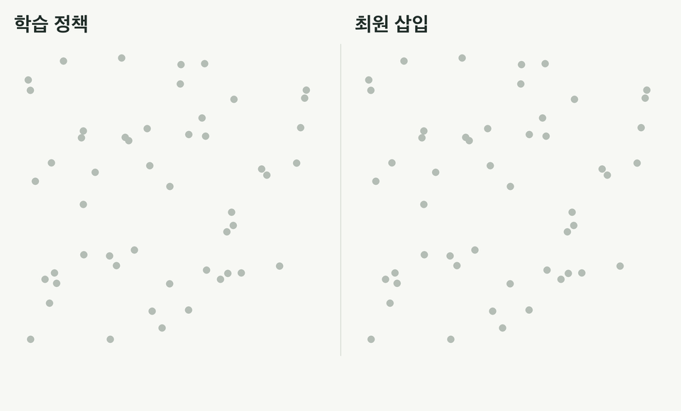
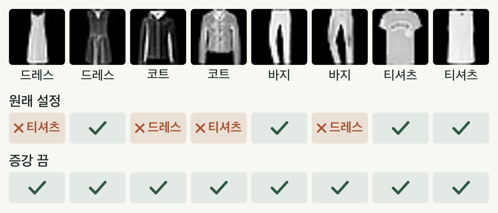
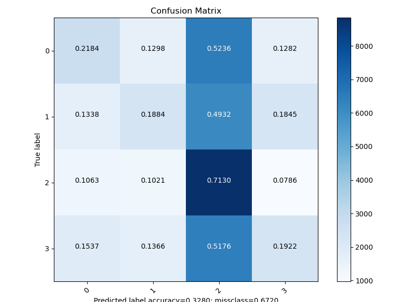
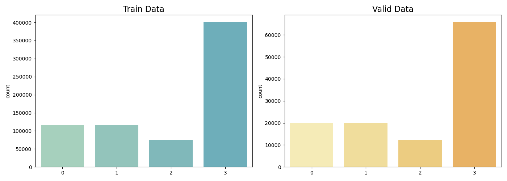
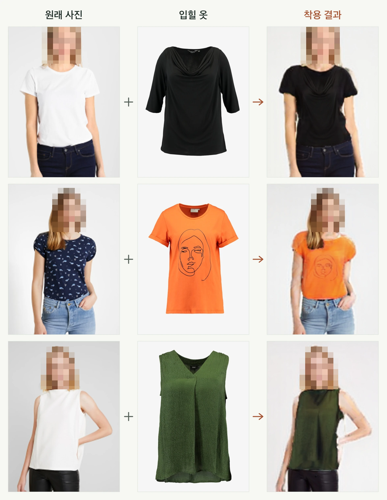
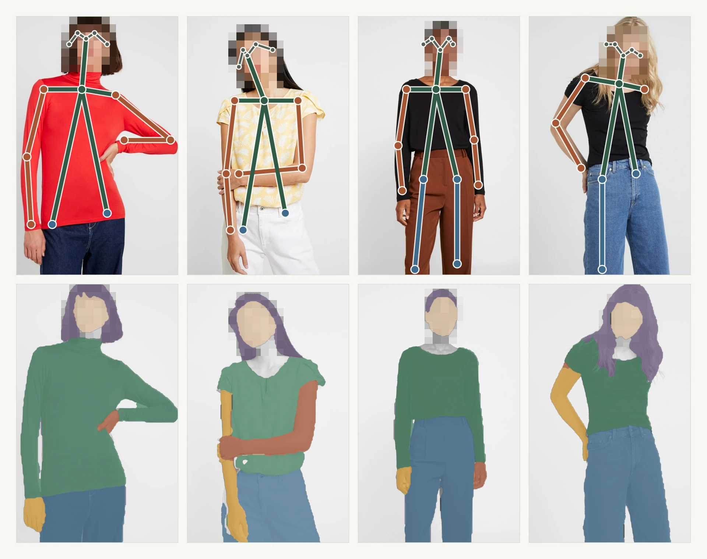

학부연구생 때의 연구.
학부연구생 때는 강화학습과 컴퓨터 비전 연구를 많이 했습니다.
그중 코드를 공개한 세 프로젝트를 모았습니다.
읽는 방법 프로젝트마다 무엇을 만들었는지 먼저 소개하고, 실험 결과와 막힌 지점, 그 원인을 이어서 적었습니다. 직접 한 것과 가져다 쓴 것, 실행 조건과 한계는 「자세히」에 있습니다.
01 / 강화학습 · 그래프 신경망
강화학습으로 TSP 경로를 만드는 그래프 모델
2021 · 학부연구생도시를 그래프로 표현하고, 다음에 갈 도시를 강화학습으로 고르게 했습니다.
- 1그래프로 표현
도시, 거리, 방문 여부
- 2Structure2Vec + Q-learning
도시마다 Q값 계산
- 3다음 도시 선택
경로가 가장 덜 늘어나는 자리에 삽입
NeurIPS 2017 그래프 조합 최적화 연구를 참고한 구현
Reinforcement learningStructure2VecQ-learningGraph neural networkTensorFlow
실험 결과와 시행착오
학습한 정책이 무작위 순서와 다르지 않았습니다

같은 도시 50개에서 학습 정책(왼쪽)은 도시를 번호 순서대로 골라 OR-Tools보다 1.12배 긴 경로를 만들었고, 최원 삽입(오른쪽)은 1.08배였습니다.- +12%OR-Tools보다 긴 경로
- 차이 없음무작위 순서 삽입과 비교
- 2가지코드에서 찾은 원인
원래 설정으로 학습해 보니, 정책이 모든 도시에 같은 Q값을 내며 번호 순서대로 도시를 골랐습니다.
- 기대
학습한 Q값이 경로를 짧게 만드는 도시를 고른다
- 실제
모든 도시의 Q값이 같아져 번호 순서대로 골랐다
- 원인
정규화 없는 이웃 합으로 값이 폭증했고, TD 목표가 시작 도시만 봤다
다시 한다면- 작은 문제에서 정답과 먼저 맞춰 보기
- 이웃 합 정규화와 목표값 수정
- 무작위 순서 기준선을 처음부터 두기
설정된 에피소드의 1%(100회)만 돌린 결과
자세히 · 직접 한 일, 실행 조건, 원인과 한계
01직접 한 일
직접 한 것
- 노드, 엣지, 방문 상태를 담은 그래프 환경과 경로 비용 기록
- Structure2Vec 임베딩과 Q값 평가
- 여러 스텝 보상 누적과 경험 샘플링을 잇는 탐색 루프
- 도시는 모델이 고르고 넣을 자리는 삽입 휴리스틱이 정하는 구조
가져다 쓴 것
- NeurIPS 2017 그래프 조합 최적화 연구의 방법 (논문 저자 아님)
02실행 조건과 결과
- TensorFlow 2.15
- seed 3개
- 에피소드 10,000 → 100
OR-Tools 해 대비 평균 투어 길이 비율 · 학습 범위는 도시 30–400개 · 학습 정책은 세 seed가 같은 투어를 냈습니다 | 도시 수 (문제 수) | 학습 정책 | 무작위 순서 + 삽입 | 최원 삽입 | 최근접 이웃 | 학습 정책 vs 무작위 (Wilcoxon p) |
|---|
| 20 (100) · 학습 범위 밖 | 1.11 | 1.11 | 1.03 | 1.18 | 0.96 |
| 50 (50) | 1.13 | 1.14 | 1.05 | 1.21 | 0.24 |
| 100 (30) | 1.12 | 1.13 | 1.06 | 1.22 | 0.38 |
03원인과 한계
- Q값 폭증
정규화 없이 완전 그래프 전체를 더해 Q값이 수백만 단위로 커졌고, 갱신 손실이 10¹⁵ 단위까지 튀었습니다.
- TD 목표값 오류
목표값이 남은 도시가 아니라 늘 시작 도시의 Q값으로 계산됐고, n-step 다음 상태도 한 칸 어긋나 있었습니다.
- 에피소드 100회로 줄임
큰 그래프는 에피소드당 약 45초라 10,000회면 seed당 5일이 넘습니다. 횟수만 줄이고 나머지 설정은 그대로 뒀습니다.
한계
- 원논문 그대로의 재현 아님 (target network 없음, n-step 방식 다름)
- 설정된 에피소드의 1%만 학습
- 끝까지 학습했을 때의 성능은 알 수 없음
02 / 컴퓨터 비전 · 이미지 분류
ResNet으로 의류 사진을 분류하는 모델
2021 · 학부연구생K-Fashion 의류 사진을 드레스, 아우터, 바지, 상의로 나누도록 학습하고 클래스별 오류를 분석했습니다.
- 1의류 사진 4종
가장 적은 클래스 수에 맞춰 샘플링
- 2ResNet50V2
ImageNet 사전학습 가중치로 시작
- 3클래스별 오류 분석
정밀도, 재현율, 혼동행렬
ImageNet 사전학습 ResNet50V2 활용
TensorFlowResNet50V2Class imbalanceError analysis
실험 결과와 시행착오
설정 오류 두 곳 때문에 정확도가 절반에 머물렀습니다

같은 테스트 이미지에 대한 두 모델의 답입니다. 원래 설정은 코트를 드레스나 티셔츠로 답했고, 증강만 끈 모델은 모두 맞혔습니다.- 48.9% → 94.4%증강만 껐을 때 정확도
- +29.8%p숏컷 연결만 고쳤을 때
- 0%원래 설정의 코트 정답률
공개 데이터 Fashion-MNIST로 같은 코드를 돌려도 예측이 한쪽으로 쏠렸습니다. 원인은 증강 설정과 숏컷 연결 오류였습니다.
대체 공개 데이터 결과 · K-Fashion 성능 아님
자세히 · 직접 한 일, 실행 조건, 원인과 한계
01직접 한 일
직접 한 것
- ResNet50V2 분류 학습 코드
- 학습, 검증 데이터를 클래스별로 다운샘플링
- 클래스별 지표와 혼동행렬 검토
- 드레스와 아우터 오류 사례 분석
가져다 쓴 것
- ImageNet 사전학습 ResNet50V2 가중치
- K-Fashion 데이터

K-Fashion으로 학습한 공개 저장소 그림 · README 수치와 같은 조건인지는 확인 못 함
원본 그림 크게 보기
K-Fashion 클래스 분포 · 공개 저장소 그림 02실행 조건과 결과
- RTX A6000
- TensorFlow 2.15
- Fashion-MNIST 4클래스(드레스, 코트, 바지, 티셔츠)
- 10 epoch
독립 테스트 정확도 · 클래스당 1,000장 · 두 값은 seed 0 / 1 | 바꾼 설정 (한 가지씩) | 테스트 정확도 | 가장 많이 예측된 클래스 비율 |
|---|
| 원래 설정 | 48.9% / 39.1% | 36% / 49% |
| 증강 끔 | 94.4% / 94.3% | 26% / 26% |
| 숏컷 연결 수정 | 78.7% / 63.1% | 35% / 53% |
| L2 계수 0.01 → 0.0001 | 39.4% | 48% |
| 혼합 정밀도 끔 | 52.2% | 51% |
| 모멘텀 0.1 → 0.9 | 24.9% | 99.9% |
| 숏컷 수정 + 증강 끔 + L2 0.0001 | 96.4% | 25% |
03원인과 한계
- 증강이 의도보다 셌음
약한 증강을 의도했지만 실제로는 ±72° 회전, 상하 뒤집기, 절반 크기 축소로 동작했고, 캐시 때문에 첫 epoch의 변형이 끝까지 고정됐습니다.
- 숏컷 연결 오류
identity 숏컷이 원래 입력 대신 BN과 ReLU를 거친 값을 넘겼습니다. ImageNet 가중치는 오류 없이 들어가 겉으로는 드러나지 않았습니다.
- 평가 방식
README의 recall은 0.5 임계값 기준이었고 평가에 검증 데이터를 다시 썼습니다. 여기 올린 정확도는 겹치지 않는 테스트 세트로 잰 값입니다.
- 대체 데이터
K-Fashion은 AI Hub 이용 신청이 필요해, 여기 올린 결과는 공개 데이터 Fashion-MNIST로 돌린 것입니다.
한계
- README의 평가는 검증 데이터를 다시 써서 독립 테스트가 아님
- 오류 원인(불균형, 촬영 구도)까지는 검증하지 않음
- 여기 올린 결과는 대체 데이터(Fashion-MNIST)로 10 epoch 학습한 것
- 맨 위 그림은 다른 seed로 학습한 두 모델의 답 (정확도 47.2%, 94.2%)
03 / 컴퓨터 비전 · 가상 착용
인물 사진에 옷을 입혀 보는 가상 착용 앱
2021 · 학부연구생인물 사진과 옷 사진을 올리면 옷을 갈아입힌 이미지를 돌려주는 서버와 Android 앱을 만들었습니다.
- 1인물 사진과 옷 사진
Android 앱에서 업로드
- 2인체 파싱, 포즈, 옷 마스크
ACGPN 입력 형식으로 정리
- 3착용 이미지 생성
Flask 서버가 앱으로 반환
ACGPN과 인체 파싱, 포즈 추정 공개 모델을 묶은 통합 구현
PyTorchVirtual try-onHuman parsingFlaskAndroid
실험 결과와 시행착오
옷 마스크가 배경까지 번지는 원인을 찾았습니다

원래 사진과 입힐 옷을 올리면 서버가 상의만 바꿔 입힌 이미지를 돌려줍니다.
같은 서버가 찾은 포즈(위)와 신체 부위 분할(아래)입니다. 이 결과로 옷을 몸에 맞춰 놓습니다.- 13 / 40벌마스크가 배경까지 번진 옷
- 0.93 → 0.96사각형을 고친 뒤 마스크 IoU
- 4.9초요청 한 번 · CPU 중앙값
앱과 같은 업로드 요청으로 착용 이미지를 받아 보니, 옷 40벌 중 13벌은 GrabCut 사각형이 이미지 밖으로 나가 마스크가 배경까지 번졌습니다.
VITON-HD 테스트 이미지(CC BY-NC 4.0) · 얼굴 모자이크
자세히 · 직접 한 일, 실행 조건, 원인과 한계
01직접 한 일
직접 한 것
- 인체 파싱, 포즈, 의류 마스크를 ACGPN 입력 형식으로 정리
- OpenCV GrabCut으로 의류 마스크 생성
- Flask 업로드, 결과 반환 API
- Kotlin, Retrofit Android 클라이언트 연결
가져다 쓴 것
- ACGPN 가상 착용 모델
- 인체 파싱, 포즈 추정 공개 모델
02실행 조건과 결과
- Apple M1 Pro CPU
- PyTorch
- 공개 가중치
- 공개한 서버 코드 그대로
VITON-HD 테스트 이미지로 잰 값 · 192×256 해상도 | 항목 | 결과 | 조건 |
|---|
| 요청 한 번 처리 시간 | 중앙값 4.90초 (사분위 3.57–6.57초) | 요청 40회, CPU |
| 그중 ACGPN 생성 | 중앙값 2.27초 | 같은 40회 |
| 같은 옷 복원 SSIM | 평균 0.869 · 중앙값 0.884 | 인물 20명 |
| GrabCut 마스크 IoU | 중앙값 0.929 → 0.957 | 옷 40벌 · 코드 그대로 → 사각형을 이미지 안으로 |
03원인과 한계
- GrabCut 사각형 오류
사각형 (1, 1, w, h)가 이미지 경계를 넘어 배경 단서가 위와 왼쪽 한 줄뿐이었고, 40벌 중 13벌에서 마스크가 배경까지 번졌습니다.
- 실패 유형 세 가지
마스크가 배경으로 새면 몸통이 번지고, 소매 길이가 바뀌면 팔에 잔상이 생기고, 기장이 다르면 원래 옷 무늬가 밑단 아래에 남습니다.
- SSIM 읽는 법
같은 옷을 다시 입혀 원본과 비교한 값입니다. 옷 밖은 입력을 그대로 쓰므로 점수가 후하고, ACGPN 논문 값과 비교할 수 없습니다.
- 데이터와 가중치
VITON 데이터는 배포가 막혀 VITON-HD 테스트 이미지를 썼고, ACGPN과 OpenPose 가중치는 비상업 연구용으로 공개된 것입니다.
한계
- 화질이나 속도를 개선한 성과가 아닌 통합 구현
- 공개 가중치로 테스트 이미지 몇십 장을 돌린 값
- 제품 수준 성능이나 상용 운영 여부는 보여 주지 않음